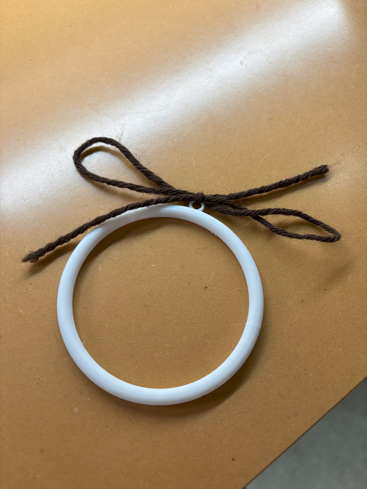

<!DOCTYPE html>
<html lang="jp"></html>
<head>
    <title>誰かのためのもの</title>
</head>
<body>
    <h1>誰かのためのもの</h1>
    <h2>傘と腕を固定する！</h2>
    <h3>構想段階のスケッチ</h3>
    <h3>設計</h3>
    <br>
    <h3>なぜ作ろうと思ったか</h3>
    <div>雨の日に、傘を持ちながら何かをしようとしていた人に向けて</div>
    <div>傘と腕を固定することができれば、手で持たなくてもいいので</div>
    <div>荷物が多い人や、傘を持ちながら何かをしたい人に役立つのではと考えました。</div>
    <h3>作品の説明</h3>
    <div>傘につけて、腕を輪っかの中に通せば、腕と傘が固定される。</div>
    <h3>改善点と今後のアイデア</h3>
    <div>クリップのように、傘に挟めるタイプにすれば、</div>
    <div>小さい子の鞄や、サイズ関係なくいろいろな人が使うことができる。</div>
    <div>アイデア例  ↓</div>
</body>